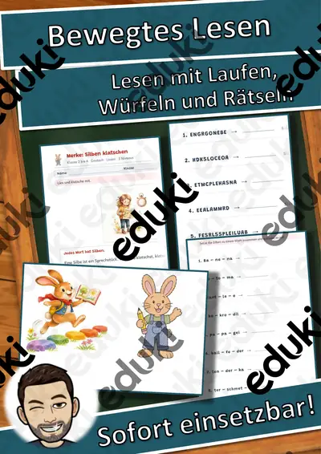
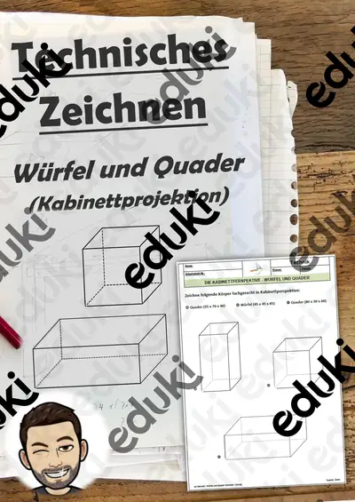

Geometrie: Körper, Flächen und Formen: Arbeitsblätter für Klasse 1–6 (Mathematik)
Geometrie reicht von Formen im Kindergartenalter bis zu Körpern, Flächen und Winkeln. In der Grundschule steht Anschauung im Vordergrund, später folgen Berechnungen.
Die Begriffsliste dieser Einheit: Dreieck und Viereck, Würfel und Quader, Symmetrie, Umfang, Flächeninhalt und Winkel.
Im Fach Mathematik gehört das Thema nach den Lehrplänen der Länder zum festen Programm, überwiegend in den Klassen 1 bis 6. Die Schülerinnen und Schüler benennen Körper und Flächen und berechnen einfache Größen.
Wer Geometrie: Körper, Flächen und Formen auf mehrere Stunden verteilt, startet mit Dreieck und Viereck, übt an Symmetrie und schließt mit Flächeninhalt ab. Alle Blätter sind kopierfertig und enthalten Lösungen für die schnelle Kontrolle. Mit den Lückentexten und dem Hörverstehen per QR-Code wird auch das Zuhören trainiert.
Zum Thema finden Sie 15 Materialien, unter anderem Materialpaket Geometrische Körper, Bewegtes Lesen: Lesen mit Laufen, Würfeln und und Würfelsätze Winter: über 3000 Sätze würfeln und, verteilt auf 8 Lückentexte mit Hörverstehen in Klasse 1–7. Körper aus Knete und Zahnstochern bauen ist der schnellste Weg zu Ecken, Kanten und Flächen.
Das gehört zum Thema
Passende Arbeitsblätter und Materialpakete

Materialpaket Geometrische Körper - Steckbriefe mit Formeln - Körper Mathe Geometrie

Pyramide Lückentext mit Wortspeicher Hörverstehen und Suchsel

Prisma Lückentext mit Wortspeicher Hörverstehen und Suchsel

Zylinder Lückentext mit Wortspeicher Hörverstehen und Suchsel

Viereck Lückentext mit Wortspeicher Hörverstehen und Suchsel

Quader Lückentext mit Wortspeicher Hörverstehen und Suchsel

Bermuda-Dreieck Lückentext mit Wortspeicher Hörverstehen und Suchsel

Dreieck Lückentext mit Wortspeicher Hörverstehen und Suchsel

Kugel Lückentext mit Wortspeicher Hörverstehen und Suchsel

Bewegtes Lesen: Lesen mit Laufen, Würfeln und Rätseln

Würfelsätze Winter: über 3000 Sätze würfeln und schreiben, mit Bildwürfel-Netzen in 3 Stufen (Klasse 1–3, DaZ)

Geometrische Körper - Steckbrief Pyramide - Mathe - Geometrie - Differenziert

Geometrische Körper - Steckbrief Quader - Mathe - Geometrie - Differenziert

#edukilights22 Geometrische Körper - Steckbrief Würfel - Mathe - Geometrie - Differenziert #edukilights22

Technisches Zeichnen: Lerntheke zur Kabinettprojektion: 01 Würfel und Quader Zeichnen - Übungsaufgaben inkl. Lösung
Häufige Fragen
Für welche Klassenstufe passen die Arbeitsblätter zu Geometrie: Körper, Flächen und Formen?
Die 15 Materialien zu diesem Thema sind für Klasse 1–7 ausgelegt, die meisten davon für Klasse 6. Einzelne Titel lassen sich mit Anpassung auch eine Stufe darunter oder darüber einsetzen.
Welche Inhalte decken die Materialien zu Geometrie: Körper, Flächen und Formen ab?
Inhaltlich reicht die Auswahl von Dreieck und Viereck über Würfel und Quader und Symmetrie bis zu Flächeninhalt; Details stehen bei den einzelnen Materialien.
Wie setze ich Geometrie: Körper, Flächen und Formen im Unterricht ein?
Körper aus Knete und Zahnstochern bauen ist der schnellste Weg zu Ecken, Kanten und Flächen. So entsteht aus den Blättern eine kleine Einheit, die sich auf zwei bis drei Stunden verteilen lässt.
Mehr Material nach Fach und Klasse
- Alle Materialien Deutsch
- Arbeitsblätter Deutsch Klasse 1
- Arbeitsblätter Deutsch Klasse 2
- Arbeitsblätter Deutsch Klasse 3
- Arbeitsblätter Deutsch Klasse 4
- Arbeitsblätter Deutsch Klasse 5
- Arbeitsblätter Deutsch Klasse 6
- Unterrichtsmaterial Klasse 1
- Unterrichtsmaterial Klasse 2
- Unterrichtsmaterial Klasse 3
- Unterrichtsmaterial Klasse 4
- Unterrichtsmaterial Klasse 5
- Unterrichtsmaterial Klasse 6
Verwandte Lehrplanthemen
- Addition und Subtraktion (Mathematik, Klasse 1–4)
- Das kleine Einmaleins (Mathematik, Klasse 2–4)
- Größen, Einheiten und Uhrzeit (Mathematik, Klasse 2–6)
- Zahlenraum und Stellenwerte (Mathematik, Klasse 1–4)
- Brüche und Dezimalzahlen (Mathematik, Klasse 5–7)